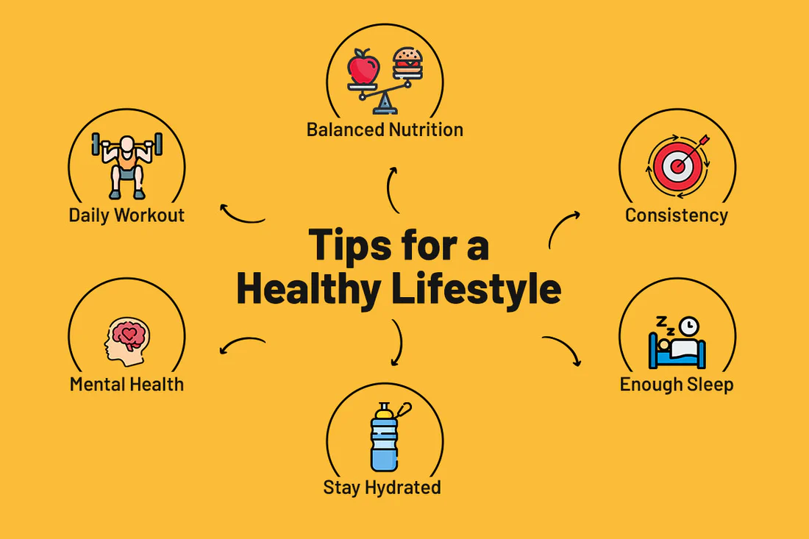

Health & Wellness Resources
Our health articles provide useful information on nutrition, fitness, mental wellness, and healthy daily habits. These articles are designed to help students and the community make informed choices for a healthier lifestyle.
Latest Health Articles
📚 5 Ways to Stay Healthy During Exams
Learn simple habits such as getting enough sleep, staying hydrated and managing study schedule during exam season.
💧 Benefits of Drinking Water
Drinking enough water helps improve concentration, digestion, body temperature, and overall energy levels.
🥗 Building a Balanced Diet
Discover how combining fruits, vegetables, protein, whole grains, and healthy fats can improve your health.
🏃 Daily Exercise for Beginners
Start with simple activities such as walking, stretching, and light jogging to build a consistent fitness routine.
Why Read Our Articles?
📖 Easy to Understand
Health information written in simple language for students and the community.
🌱 Practical Tips
Learn healthy habits that can be applied in everyday life.
💡 Expert Advice
Explore reliable wellness tips inspired by healthy lifestyle practices.
❤️ Better Living
Improve your physical and mental wellbeing through continuous learning.